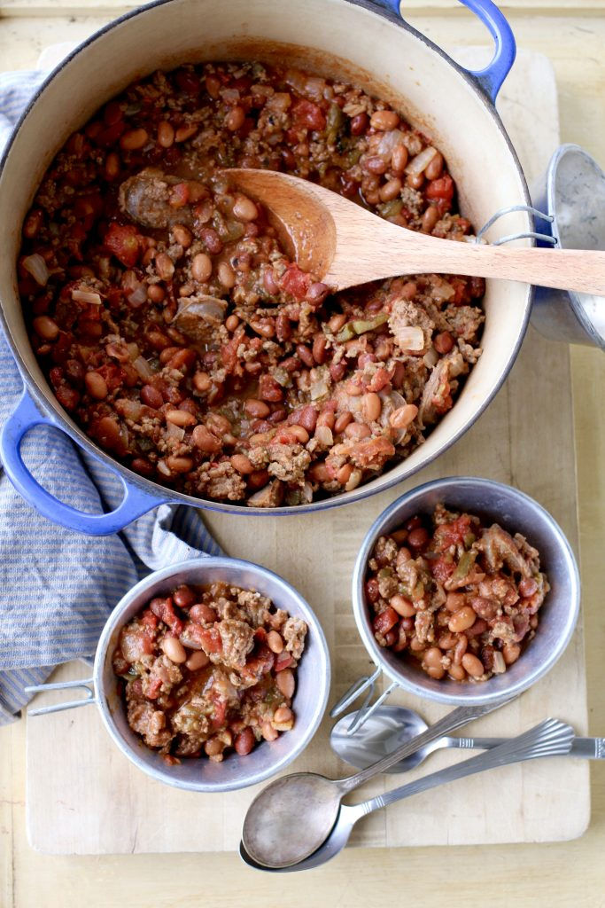

Chili
A picture of delcious chili.
This recipe is for a flavorful chili. Beef bratwurst and carmelized onions + jalapenos
round out this meal.
Ingredients
- 2 lbs. of 93% lean ground beef
- 1 yellow onion
- 2 medium jalapenos
- 2 packets of McCormick Chili Seasoning
- 1 can of ROTEL
- 1 can of pinto beans
- 1 can of red kidney beans
- 2-3 cloves of garlic
- 3-4 Bratwurst
- 2-3 cans of beer
Steps:
- Brown the ground beef and add to slowcooker, preserving the beef fat in the pan.
-
Sautee the onion, chopped finely; the jalapeno, diced; and the garlic, minced. The longer, the better.
-
Boil the bratwurst in beer for 10 minutes, and then chop into medallions, adding to the chili.
- Add the canned ingredients. Do not drain juices.
- Add packets of seasoning and cook for 4-12 hours. The longer, the better.